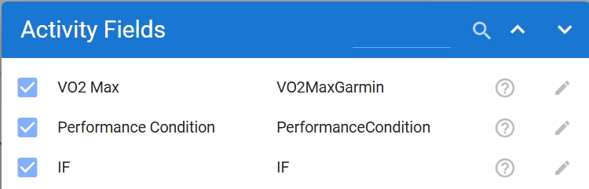

Montis.icu
Montis.icu
Intelligent endurance coaching that turns your training data into clear decisions.
montis.icu → “of the mountain (latin)” + “I see you”
A system that watches over endurance and performance over the long term.
Built on validated Intervals.icu data, Montis.icu Coach transforms 60+ structured physiological markers into transparent performance intelligence — across load regulation, recovery, metabolic efficiency, durability, and neural density.
It doesn’t guess. It doesn’t improvise. It applies established endurance science — Seiler, Banister, Skiba, San Millán and others — inside a unified inference engine.
And it closes the loop. Forecasted microcycles are written directly back into the athlete’s calendar and executed seamlessly on Zwift, Garmin, and connected platforms.
More than training blocks. It protects durability. Manages stress intelligently. Preserves metabolic health. Extends high performance across decades — not seasons.
Endurance athletes generate vast volumes of structured training data — power files, HRV, sleep metrics, training stress, interval analytics, subjective logs — yet most platforms provide dashboards rather than decisions.
Coaching remains manually interpretive. Generative AI tools are conversational — but probabilistic, non-deterministic, and physiologically ungoverned.
The result: data-rich athletes without a unified, explainable performance intelligence system.
Montis.icu Coach V5 is a physiology governed endurance performance intelligence engine built on the Unified Reporting Framework (URF v5.1).
It converts validated Intervals.icu data into a structured, multi-layer inference model integrating 42 coaching markers across load regulation, autonomic recovery, metabolic efficiency, durability, and neural density.
Every output is governed by transparent, physiology-grounded logic — not language-model improvisation.

Training load creates stress. Physiology measures recovery. Performance Intelligence models capability. ESPE reveals adaptation. ADE determines how training should change next.
Coach V5 is not a conversational wrapper around endurance data. It is a Physiology-Governed intelligence infrastructure layer.
Today, it augments individual athletes and coaches. Architecturally, it is built to scale into team environments, coach networks, and enterprise performance systems — model-agnostic, headless, and future-ready.
Natural language becomes the interface. Physiology remains the authority.
Transparent. Physiology-grounded. Built for real training decisions. Built to convert endurance data into structured performance decisions.
“Game changer. What a fantastic add-on.” — Jeff
“I use it almost every day to understand what to improve in my races and workouts.” — Marco S.
“It's producing really good insights and it's actually fun to use.” — Marius
“Very cool and awesome potential. Enjoying it so far.” — G-Mack
“This app is great. Using it with Concept2 erg data has given me good ideas to think through, plus a modified training plan to help meet my goal.” — Richard
Using these foundations, the coach continuously monitors ACWR, Polarisation Index, and Load Variability Index to identify maladaptation early and apply proactive recovery or load modulation.
Whether you’re targeting a Gran Fondo, Ironman, or Marathon, this system ensures progressive overload, sustainable adaptation, and peak timing — maximizing aerobic performance while minimizing injury and non-functional overreaching.
The latest version introduces Performance Intelligence — a structural modeling layer that analyzes how your system handles intensity, durability, and neural strain.
This layer does not replace traditional metrics like TSS or CTL. It evaluates how your body behaves under load.
Why this matters: Future training guidance is no longer shaped only by volume targets — but by repeatability stability, durability trends, and intensity clustering patterns.
The Energy System Progression Engine (ESPE) extends Performance Intelligence by analysing how your power-duration curve evolves over time.
While Tier-3 modelling explains how your system behaves under stress (WDRM, ISDM, NDLI), ESPE evaluates how your physiological capacity itself is changing.
It compares your recent power curve against a previous training window and quantifies progression across key energy system anchors.
By comparing these anchors across training windows, ESPE reveals which energy systems are improving, stabilising, or regressing.
Energy System Progression Neuromuscular (5s) → Stable Anaerobic (1m) → Slight Decline VO₂max (5m) → Improving Threshold (20m) → Improving Durability (60m) → Strong Gain
This pattern often reflects an aerobic-focused training block, where endurance capacity rises while short explosive power temporarily declines.
Most platforms show a power curve snapshot. ESPE instead tracks the direction of physiological adaptation.
This makes ESPE a powerful diagnostic layer that helps explain why performance trends are occurring and guides future training decisions.
💡 Tip: Keep FTP updated and log sleep/mood in Intervals.icu for higher signal accuracy.
Montis.icu Coach App is free to use. If you find value in it and would like to support continued development, infrastructure costs, and new features, you can become a supporter below. Your support genuinely helps keep the project independent and improving.
Have your own OpenAI, Anthropic (Claude), or Gemini API key? You can run reports directly through your own AI model using the LLM Interface App.
Best for advanced users who want full control over model choice, cost, or output style, but remember you don't get the advantage of natural chat response, its pure input and output. However, its a useful demonstration to illustrate we can connect to any LLM of choice.
IMPORTANT NOTE: Please be aware that because of STRAVA API policy intervals.icu cannot share any STRAVA sourced data with third parties. This is otherwise fine for Garmin, Wahoo, Zwift etc, and FIT file uploads to Intevals.icu - please connect these to your intervals.icu profile. After you have connected a proper source import all your activities from Strava, this is not subject to API terms! see Import all Your data from Strava
Reports are generated using the Unified Reporting Framework (URF). Outputs are deterministic, reproducible, and built from validated Intervals.icu data.
Below are example outputs from the system. These are pre-rendered snapshots generated from the live pipeline (no runtime cost).
Microcycle control (7 days)
Focus: Load • Fatigue • Performance Intelligence • ADE v2
Example output (snapshot) •
42-day physiological monitoring
Focus: Recovery • HRV • Stability
Example output (snapshot) •
90-day block analysis
Focus: Progression • Durability • Phase structure
Example output (snapshot) •
Macro-level overview
Focus: Annual structure • Load patterns • System stability
Example output (snapshot) •
Your reports are deterministic. But you can interrogate the full performance context. Below are powerful prompts athletes and coaches use to extract deeper value from Weekly, Seasonal, Wellness, and Performance Intelligence reports.
Forces comparison of WDRM, ISDM, NDLI to identify whether fatigue is metabolic, structural, or intensity-density driven.
Evaluates ACWR, FatigueTrend, Monotony, Strain, HRV deviation to distinguish adaptive stress from overload risk.
Interrogates NDLI and supra-threshold joule stacking to detect hidden density accumulation.
Overlays 7-day signals against the 90-day structural state (WDRM, ISDM, NDLI) while referencing ESPE energy-system progression to determine whether current stress aligns with long-term adaptation capacity.
Combines ISDM durability metrics (decoupling trends, high-drift frequency, Z2 stability and long-session behaviour) with ESPE endurance and threshold progression derived from rolling power-curve comparisons.
Uses WDRM anaerobic stress signals (W′ depletion depth, high-depletion sessions, rolling joules > FTP) alongside ESPE VO₂ and anaerobic progression to differentiate productive adaptation from simple intensity stacking.
Compares rolling power curves (current vs previous macro block) across neuromuscular, anaerobic, VO₂, threshold and endurance durations to detect real performance progression.
Uses ESPE delta analysis across 5s, 30s, 1m, 5m, 20m and 60m anchor durations to identify whether current training stimulus is producing aerobic, threshold, VO₂ or anaerobic adaptation bias.
Evaluates power-curve progression across rolling windows rather than individual peak efforts to separate true physiological adaptation from short-term freshness effects.
Detects plateau conditions when rolling power-curve deltas stabilize across macro blocks, signalling the need for a change in stimulus or training structure.
Converts structural intelligence into forward microcycle planning — balancing load, quality exposure, and autonomic protection.
Uses CTL/ATL balance, fatigue class, and structural markers to classify the appropriate training phase.
Evaluates FatOx, MES, Efficiency Drift, Polarisation, ZQI to identify metabolic leverage points.
Generates a structured microcycle written back to your Intervals.icu calendar — aligned with WDRM, ISDM, NDLI, load balance, and recovery signals.
Compares multi-block ISDM trends, decoupling suppression, and high-drift frequency to determine whether structural endurance capacity is rising — or just maintaining under higher load.
Evaluates WDRM depletion depth, repeatability stability, and supra-threshold joule density across chronic and acute windows to detect real anaerobic adaptation.
Cross-checks NDLI clustering, IF density, and CTL baseline to identify when neural stress outpaces durability conditioning.
Compares Fitness Trend vs Load Trend alongside Tier-3 markers to detect diminishing return phases before performance plateaus.
Simulates forward load exposure using current WDRM, ISDM, and NDLI state to identify the safe boundary for progression versus overload.
The Coach operates as a multi-framework inference engine. Each physiological model contributes structured signals that are blended, weighted, and resolved deterministically within URF.
Tier-3 structural markers (WDRM, ISDM, NDLI) are derived extensions of established endurance physiology frameworks — including Critical Power, cardiovascular drift research, and CNS fatigue models — applied to multi-session load interpretation.
| Model Reference | Framework Link | Metric Source | Output Type | Coaching Role |
|---|---|---|---|---|
| Seiler Polarisation | Intensity Framework | Z1–Z3% | Polarisation Ratio | Validates 80/20 intensity distribution |
| Banister Fitness–Fatigue | Load Adaptation | ATL, CTL, TSB | Training Load Model | Models fitness–fatigue impulse response and adaptation balance |
| Coggan Power–Duration | Efficiency Framework | FTP, Power Curve | Efficiency Factor | Tracks metabolic endurance and fatigue resistance |
| Foster Overtraining | Recovery Alignment | Strain, Monotony | Overtraining Index | Quantifies cumulative stress risk using monotony × strain dynamics |
| San Millán Metabolic | Metabolic Efficiency | FatOx Index | Mito Efficiency | Evaluates fat utilization and Zone 2 economy |
| Noakes Central Governor | Readiness Forecast | HRV × RPE | CNS Fatigue Index | Detects neural fatigue and motivational readiness |
| Skiba Critical Power | Performance Integration | CP, W′ | Fatigue Decay Curve | Predicts endurance performance limits |
| Mujika Tapering | Periodisation | Load % Reduction | Taper Efficiency | Optimizes pre-event tapering blocks |
| Friel Training Stress | Consistency Framework | TSS, Compliance | Adherence Score | Validates plan execution and load control |
| Sandbakk–Holmberg Integration | Action Generation | Multi-framework synthesis | Adaptive Action Score | Produces holistic, actionable coaching feedback |
| Skiba + Critical Power Extension | W′ Depletion & Recovery Modelling | W′ Balance, Joules > FTP | Anaerobic Repeatability State (WDRM) | Evaluates supra-threshold repeatability under fatigue |
| Cardiovascular Drift Theory | Durability & Decoupling | Power–HR Decoupling %, Drift Exposure | Durability State (ISDM) | Measures aerobic stability under prolonged load |
| Noakes + CNS Fatigue Models | Neural Load Regulation | IF Density, Intensity Clustering | Neural Density State (NDLI) | Detects central fatigue and intensity stacking risk |
The Coach V5 functions as a Physiology-Governed multi-framework inference engine — blending classical endurance physiology, structural capability modelling, and adaptive load dynamics into a unified decision layer.
The Montis.icu Coach V5 engine continuously monitors a multidimensional suite of 63+ coaching markers across physiological, psychological, and metabolic domains. These metrics are structured into three tiers within the Unified Reporting Framework (URF v5.1).
Primary load, recovery, metabolic, and readiness metrics — continuously monitored across all report types.
| Domain | Markers | Purpose |
|---|---|---|
| Load & Performance | CTL, ATL, TSB, TSS, ACWR, Monotony, Strain, LIR, Fatigue Trend | Measure training load, balance, and adaptation trends. |
| Wellness & Recovery | Recovery Index, HRV, Resting HR, Sleep Score, Sleep Duration, Stress Tolerance, Mood, Soreness | Assess physiological recovery and psychological readiness. |
| Metabolic Efficiency | FatOx, MES, EF, Efficiency Drift %, Fatigue Resistance, Z2 Stability | Evaluate aerobic durability and energy system balance. |
| Periodisation | Block Phase, Taper Efficiency, Consistency Score, Durability Index, Adaptation Ratio | Track training phase progression and long-term load control. |
| Readiness & CNS | CNS Fatigue Index, Motivation Stability, Readiness Forecast | Measure neural recovery and performance readiness. |
| Holistic Actions | Adaptive Action Score, Action State 🟢🟠🔴, Trend Confidence % | Generate adaptive feedback and actionable coaching guidance. |
Derived from device integrations (Garmin, HRV4, Whoop) or advanced load models; used to refine URF analytics.
| Marker | Source / Dependency | Purpose |
|---|---|---|
| VO₂ Estimation (VO₂eff) | Garmin or power–HR model | Cardiorespiratory efficiency trend |
| Intensity Factor (IF) | Power data (FTP defined) | Session intensity relative to threshold |
| Session RPE (sRPE) | Manual / subjective input | Perceived load calibration (TSS × RPE) |
| Sleep Debt Index | Wellness logs (Sleep vs Target) | Quantifies chronic recovery deficit |
| HRV-SDNN / RMSSD | HRV4Training / Whoop API | Autonomic variance for deeper readiness precision |
| Glycogen Depletion Score | Power × Duration × IF model | Estimates carbohydrate utilisation |
| Hydration Score | Body weight & HR trend | Detects dehydration or plasma volume shifts |
Tier-3 introduces structural capability modeling — evaluating how fitness behaves under stress, not just how much load is accumulated. It combines stress diagnostics with performance-expression signals derived from power-duration curves.
| Model | Core Signals | Purpose |
|---|---|---|
| WDRM — Anaerobic Repeatability | W′ depletion %, high-depletion sessions, joules above FTP | Measures repeatable supra-threshold resilience |
| ISDM — Durability | Decoupling, high-drift sessions, long-session load | Evaluates fatigue resistance and power stability |
| NDLI — Neural Density | Rolling joules > FTP, intensity clustering, IF density | Detects CNS strain and intensity stacking |
| ESPE v1 — Energy System Progression | Power-duration curve anchors (5s, 1m, 5m, 20m, 60m), curve rotation, CP/W′ model trends | Detects adaptation across energy systems (neuromuscular, anaerobic, VO₂, threshold, durability) by comparing power curve behaviour across training windows. |
ESPE extends stress diagnostics by analyzing how the athlete’s power-duration curve evolves over time. This allows the system to determine whether training load is producing meaningful performance adaptation rather than simply accumulating stress.
🧩 Total Monitored Markers:
Tier-1 (32) + Tier-2 (7) + Tier-3 (24) → 63+
Weighted dynamically across report types (Weekly • Seasonal • Wellness • Summary)
via the URF adaptive relevance model.
The Montis.icu Coach App is fully dependent on Intervals.icu for athlete data. All workouts, wellness logs, and training load calculations are sourced directly from your Intervals.icu account.
For best accuracy, ensure your wellness markers are synced: HRV, Resting HR, Sleep, Mood, Stress, and Soreness. Garmin users should expose VO₂maxGarmin, Performance Indicators, and Intensity Factor (IF).

🙏 Special thanks to David Tinker, creator of Intervals.icu, for enabling open endurance data access and seamless athlete integration.
Search in the GPT Store for “Montis.icu Coach V5” or click on top link below 👇
Note: Version 3 is now deprecated — please use the latest V5 Railway Engine build for best performance and accuracy.
The Montis.icu Coach App evolves in the open. Feature ideas, enhancements, and experimental concepts are discussed publicly, while shipped and committed work is tracked separately.
New ideas and enhancement requests are tracked as GitHub issues. This keeps discussion transparent and ensures proposals are evaluated against URF guarantees such as determinism, auditability, and context integrity.
View Open Feature Requests 🧩 Intervals.icu Forum DiscussionFeatures that have been accepted, implemented, or released are documented in the public roadmap and changelog. This reflects what is real and live, not speculative ideas.
👉 View the roadmap and full release history here:
🗺️ View Roadmap 🗺️ View Changelog 🗺️ View Documentation🔍 Feature requests may not appear on the roadmap until they are validated, scoped, and aligned with URF design constraints.
For integration, customization, or coaching inquiries, connect via GitHub link below or DM via Intervals.icu DM and contribute in Intervals.icu Forum.
github.com/revo2wheels
Built with ❤️ for endurance athletes — by Clive King.
Made in the Suisse Alps 🇨🇭.
Powered by Intervals.icu, Cloudflare and the Railway Engine.
Montis.icu Coach App is free to use. If you find value in it and would like to support continued development, infrastructure costs, and new features, you can become a supporter below. Your support genuinely helps keep the project independent and improving.